5.5. Advanced topics
5.5.5. How do you optimize a process?
5.5.5.1. Single response case
5.5.5.1.1. |
Single response: Path of steepest ascent |
Flow chart of iterative search process
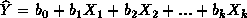
.Experimental strategies for fitting this type of models were discussed earlier. Usually, a 2k-p fractional factorial experiment is conducted with repeated runs at the current operating conditions (which serve as the origin of coordinates in orthogonally coded factors).
The idea behind "Phase I'' is to keep experimenting along the direction
of steepest ascent (or descent, as required) until there is no further
improvement in the response. At that point, a new fractional factorial
experiment with center runs is conducted to determine a new search direction.
This process is repeated until at some point significant curvature in  is detected. This implies that the operating conditions X1,
X2, ...,Xk are close to where the maximum
(or minimum, as required) of Y occurs. When significant curvature,
or lack of fit, is detected, the experimenter should proceed with "Phase
II". Figure 5.2 illustrates a sequence of line searches when seeking a
region where curvature exists in a problem with 2 factors (i.e., k=2).
is detected. This implies that the operating conditions X1,
X2, ...,Xk are close to where the maximum
(or minimum, as required) of Y occurs. When significant curvature,
or lack of fit, is detected, the experimenter should proceed with "Phase
II". Figure 5.2 illustrates a sequence of line searches when seeking a
region where curvature exists in a problem with 2 factors (i.e., k=2).
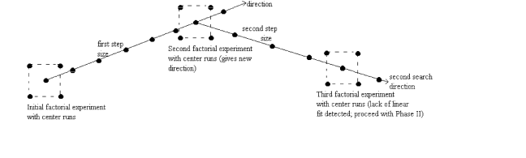
FIGURE 5.2: A Sequence of Line Searches for a 2 Factor Optimization Problem
There are two main decisions an engineer must make in Phase I:
- determine the search direction;
- determine the length of the step to move from the current operating conditions.
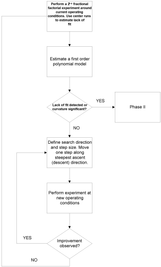
FIGURE 5.3: Flow Chart for the First Phase of the Experimental Optimization Procedure
Suppose a first order model like above has been fitted and provides a useful approximation. As long as lack of fit (due to pure quadratic curvature and interactions) is small compared to the main effects, steepest ascent can be attempted. To determine the direction of maximum improvement we use
-
the estimated direction of steepest ascent, given by the gradient of
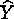
, if the objective is to maximize Y; -
the estimated direction of steepest descent, given by the negative of the
gradient of
 , if the
objective is to minimize Y.
, if the
objective is to minimize Y.
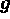
, is given by the values of the parameter estimates, that is,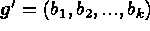
. Since the parameter estimates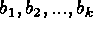
depend on the scaling convention for the factors, the steepest ascent (descent) direction is also scale dependent. That is, two experimenters using different scaling conventions will follow different paths for process improvement. This does not diminish the general validity of the method, since the region of the search, as given by the signs of the parameter estimates, does not change with scale. An equal variance scaling convention, however, is recommended. The coded factors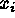
in terms of the factors in the original units of measurement,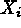
, are obtained from the relation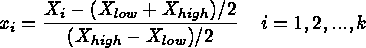
This coding convention is recommended since it provides better parameter
estimates, and therefore, a more reliable search direction. The coordinates
of the factor settings on the direction of steepest ascent separated a
distance  from the
origin are given by:
from the
origin are given by:

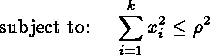
This problem can be solved with the aid of an optimization solver (e.g. like the solver option of a spreadsheet). However, in this case this is not really needed, as the solution is a simple equation which yields the coordinates

An engineer can compute this equation for different increasing values
of  and get different
factor settings all on the steepest ascent direction.
and get different
factor settings all on the steepest ascent direction.
To see the details of why this equation is true, see Technical Appendix 5A.
It has been concluded (perhaps after a factor screening experiment) that the yield (Y, in %) of a chemical process is mainly affected by the temperature (
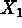
, in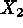
, in minutes). Due to safety reasons, the region of operation is limited to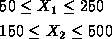
The process is currently run at a temperature of 200  C
and a reaction time of 200 minutes. A process engineer decides to run a
C
and a reaction time of 200 minutes. A process engineer decides to run a  full factorial experiment with factor levels at
full factorial experiment with factor levels at
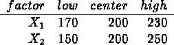
Five repeated runs at the center levels are conducted to assess lack of fit. The orthogonally coded factors are
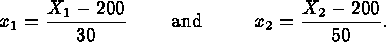
The experimental results were:
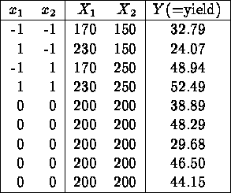
The corresponding ANOVA table for a first order polynomial model, obtained using the DESIGN EASE statistical software, is
SUM OF MEAN F SOURCE SQUARES DF SQUARE VALUE PROB>F MODEL 503.3035 2 251.6517 4.810 0.0684 CURVATURE 8.1536 1 8.1536 0.1558 0.7093 RESIDUAL 261.5935 5 52.3187 LACK OF FIT 37.6382 1 37.6382 0.6722 0.4583 PURE ERROR 223.9553 4 55.9888 COR TOTAL 773.0506 8It can be seen from the ANOVA table that there is no significant lack of linear fit due to an interaction term, and there is no evidence of curvature. Furthermore, there is evidence that the first order model is significant. Using the DESIGN EXPERT statistical software we obtain the resulting model (in the coded variables) as
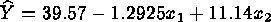
Usual diagnostic checks show conformance to the regression assumptions, although the R2 value is not very high: R2 = 0.6580.
To maximize , we
use the direction of steepest ascent. The engineer selects
, we
use the direction of steepest ascent. The engineer selects  ,
since a point on the steepest ascent direction distanced one unit (in the
coded units) from the origin is desired. Then from the equation above for
the predicted Y response, the coordinates of the factor levels for
the next run are given by:
,
since a point on the steepest ascent direction distanced one unit (in the
coded units) from the origin is desired. Then from the equation above for
the predicted Y response, the coordinates of the factor levels for
the next run are given by:
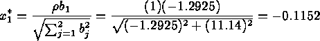
and
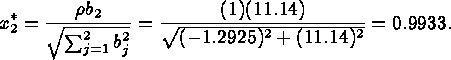
This means that to improve the process, for every
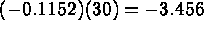
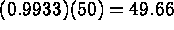
minutes.=======================================================================
Technical Appendix 5A: finding the factor settings on the steepest ascent direction a distance from origin
The problem of finding the factor settings on the steepest ascent/descent direction that are located at a distance from origin is given by the optimization problem,
from origin is given by the optimization problem,
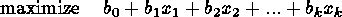

To solve it, use a Lagrange multiplier. First, add a penalty  for solutions not satisfying the constraint (since we want a direction
of steepest ascent, we maximize, and therefore the penalty is negative.
For steepest descent we minimize and the penalty term is added instead):
for solutions not satisfying the constraint (since we want a direction
of steepest ascent, we maximize, and therefore the penalty is negative.
For steepest descent we minimize and the penalty term is added instead):
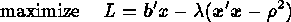
Compute the partials and equate them to zero
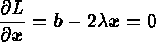
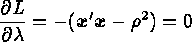
These two equations have two unknowns (the vector  and the scalar
and the scalar
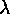
) and thus can be solved yielding the desired solution: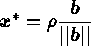
or, in non-vector notation:
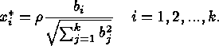
From this equation, we can see that any multiple  of the direction of the gradient (given by
of the direction of the gradient (given by
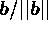
) will lead to points on the steepest ascent direction. For steepest descent, use instead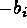
in the numerator of the equation above.